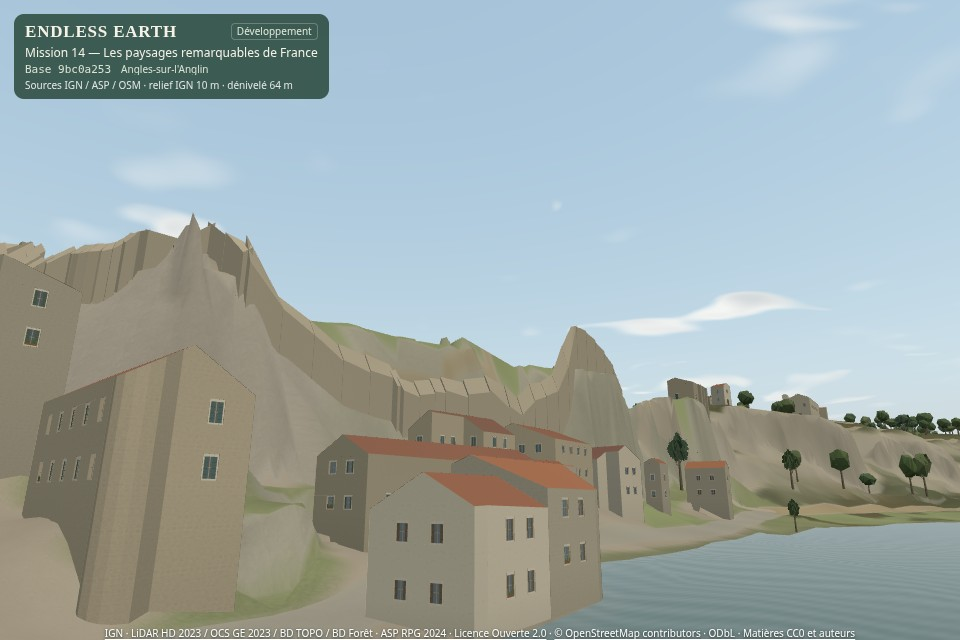
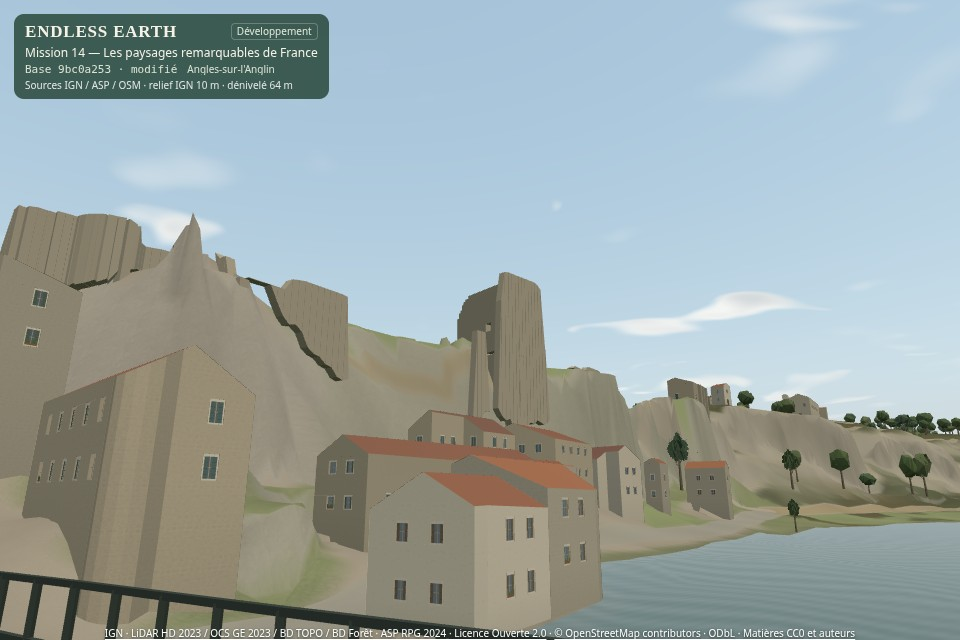

14B · en attente de validationLe pont et les vestiges d’Angles
Un tablier porté au-dessus de l’Anglin et une reconstruction partielle des ruines, à partir de sources ouvertes. Les dimensions interprétées restent signalées. 14A validé par « Go » ; 14C et 14D non commencés.
Rapport et reproduction · Planche complète · Archive 14A
83,80 m de marche enregistrée199 tests réussis0 € · aucune publication
Onze vues du vrai moteur
Avant : checkout propre 9bc0a25 (14A). Après : travail 14B sur cette base, badge « modifié ». Caméras absolues identiques, 960 × 640, FOV 55°, Équilibré, 21 juin 2026 après-midi clair. Aucune illustration générée.


Avant · 14AAprès · 14BToutes les captures originales
Poses avant · Poses après · Collisions et préservation
Une traversée continue
83,80 m en 63,89 s, moteur de marche manuel, touches W et orientation sur l’axe OSM. Une pose initiale de test, sans relocalisation pendant l’enregistrement. Son natif. La politique AutoWalk du pont reste inchangée. SwiftShader logiciel, sans preuve de fluidité Android.
Relevés · Copie VP9 et audio Opus identique
Photographies et niveaux de confiance
Références non calibrées : elles documentent la silhouette et les matériaux, sans fournir un relevé métrique. Les images ci-dessous ne sont pas des textures du jeu.
ArmmA : plan de Michaud (1994), donjon et tours · Commune : château · Documentation historique du pont. Les images privées étudiées restent dans le cache de travail ; aucun droit de modèle 3D n’en est déduit.
Coûts et limites
15 134 triangles d’ouvrages, +3 appels de rendu, environ +1,54 Mo de buffers géométriques. Surcoût médian Équilibré : +6,2 à +10,8 % dans les trois scènes mesurées. Le démarrage local observé augmente de 3,95 à 12,06 s, avec préparation et compilation logicielle ; ce relevé unique n’isole pas les causes. Pas de nouvelle texture ni passe graphique.
Le château demeure incomplet : retours LiDAR discontinus, épaisseur héritée, raccords et baies partiellement interprétés. Les arches du pont et ses transitions aux rives ne sont pas un relevé exact. Un point de quai et des échantillons près des murs deviennent bloqués : voir l’audit. La route AutoWalk de référence de 450 m reste identique.
LiDAR acquis · BD TOPO · Observations · Maillages · Mesures complètes · Replis · Reproductibilité · Droits des données
La validation artistique appartient au propriétaire. Arrêt au jalon 14B ; aucune fusion ni aucun déploiement.